Hablar del Caribe colombiano es adentrarse en un universo de sabores, memorias y saberes que se entrelazan en cada ola del mar, en cada río que desciende a las ciénagas y en cada familia que comparte un plato de pescado alrededor de la mesa. La pesca en esta región no es solo una actividad económica: es un legado vivo que refleja la relación íntima entre los pueblos y el agua, entre la naturaleza y la cultura, entre lo ancestral y lo contemporáneo. Cada red lanzada, cada pez capturado y cada receta transmitida de generación en generación son testimonios de una historia que aún palpita en los puertos, en las playas y en los mercados.
En el proyecto Del mar al plato nos proponemos mirar más allá de la simple preparación de un alimento. Queremos rescatar las voces de los pescadores, reconocer la riqueza de los ecosistemas acuáticos y dar valor a las prácticas que han resistido al paso del tiempo frente a los retos del cambio climático, la sobreexplotación y la modernidad. La gastronomía marina del Caribe es un espejo de su diversidad: allí se funden las tradiciones indígenas, afrodescendientes y mestizas en un mosaico de técnicas, sabores y rituales que siguen marcando la identidad regional.
'
Este viaje no busca únicamente documentar especies o recetas; pretende revelar la esencia de una cultura que se construye entre las mareas y los ríos, en la unión de lo salado y lo dulce, en el contraste entre los peces firmes del mar y la suavidad de los de agua dulce. Desde La Guajira hasta San Andrés y Providencia, cada departamento aporta su voz, sus historias y sus preparaciones, mostrando que el Caribe no es un territorio uniforme, sino una sinfonía de identidades que se reconocen en torno al agua.
Así, la introducción a este proyecto no es una antesala técnica, sino una invitación a sentir, a escuchar y a saborear. Acompañar a los pescadores en sus madrugadas, comprender los cuidados de la conservación, descubrir la ciencia que hay detrás de la microbiología del pescado y, sobre todo, degustar las recetas que conectan el presente con las raíces. Porque pescando tradiciones no se trata únicamente de rescatar el pasado, sino de darle vida en cada mesa, de reafirmar el orgullo caribeño y de recordar que el mar y el río no son solo paisajes, sino la esencia misma de un pueblo.
Audio en ingles
Audio en frances
Quiénes Somos
Brenny Cera
Aracelly Peña
Nicoll Ortega
Jeissy Rodriguez
Sailin Jimenez
Maira Cardenas
Sobre el Proyecto
Pescando Tradiciones es una iniciativa que busca reconocer el valor cultural y gastronómico de los pescadores, promover la importancia de consumir pescado de manera responsable y educar sobre la seguridad alimentaria.
Somos seis soñadores unidos por una misma pasión: transformar la riqueza del mar Caribe en arte culinario. Nuestro proyecto Del Mar al Plato nace del amor por los sabores auténticos de nuestra región, de la admiración por quienes viven del mar y de la curiosidad por crear algo que aún no existe.
Cada plato que diseñamos cuenta una historia: la del pescador que madruga, la del manglar que protege la vida, la de las olas que llevan consigo el aroma del coco y la sal. Nos inspira el color, la tradición y la fuerza del Caribe.
No solo cocinamos, creamos experiencias que conectan la memoria, la cultura y la innovación. Soñamos con que cada preparación sea un homenaje a nuestra tierra, una fusión de identidad y sabor que demuestre que en el mar hay infinitas formas de vida… y de inspiración.
Somos Del Mar al Plato: jóvenes que creen en el poder del sabor para contar historias, cuidar nuestras raíces y mostrar al mundo que el Caribe colombiano es un tesoro que se saborea con el alma.
Rescatar el conocimiento tradicional de los pescadores
Explicar la diferencia entre pescados de mar y río
Promover prácticas de conservación seguras
Divulgar la ciencia y la microbiología de los productos del mar
Audio en ingles
Audio en frances
Historia de la Pesca y el consumo
Desde tiempos antiguos, la pesca ha sido una de las principales fuentes de alimento para las comunidades.
El Caribe colombiano es una región cuya riqueza natural, cultural y social se extiende a lo largo de los departamentos de La Guajira, Cesar, Magdalena, Atlántico, Bolívar, Sucre, Córdoba, e incluye islas como San Andrés y Providencia. Estos territorios combinan costas, islas, ciénagas, manglares, ríos y mar, configurando un mosaico de paisajes que han sido base de vida, tradición y patrimonio (AUNAP – Sede Barranquilla).Aunap
Entre sus elementos esenciales aparece el agua: los pescadores de los ríos, de las costas marítimas y de las islas han aprendido a leer mareas, corrientes, ciclos de lluvias y estaciones de pesca, adaptándose a las condiciones únicas de cada territorio. Las comunidades ribereñas del Magdalena, las ciénagas cercanas a los departamentos de Sucre y Córdoba y los pescadores de La Guajira y Bolívar conforman una red viviente de saberes ligados al mar, la ciénaga y el río.
En el departamento de Magdalena, por ejemplo, en sus municipios costeros como Taganga o Bahía Concha, las faenas de pesca artesanal han sido tradicionales desde tiempos ancestrales, usando redes, atarrayas, anzuelos, y otros artes menores. Allí se registran desembarcos significativos de especies como lisa, bocacolora, bonito, especies que tienen importancia cultural y alimentaria para esas comunidades.Expedito Repositorio+1
El departamento de La Guajira ha experimentado cambios importantes en su flota artesanal, tanto en métodos como en distribución de los sitios pesqueros, desde los años 80 hasta hoy, adaptándose a las exigencias ambientales, la movilidad de los pescadores y los desafíos del mercado.Repositorio Unimagdalena
En Cartagena (departamento de Bolívar), la pesca artesanal tiene un rol vital: corregimientos como La Boquilla, Punta Canoa, Pasacaballos y Manzanillo del Mar siguen manteniendo actividades pesqueras propias. AUNAP recientemente entregó embarcaciones a comunidades de esos sectores, reconociendo la importancia de fortalecer la pesca artesanal marítima costera de Bolívar.Aunap
Desde Sucre y Córdoba podemos mirar al Golfo de Morrosquillo, con manglares y bahías que alimentan la tradición pesquera, donde los pescadores artesanales usan artes como redes de enmalle, nasas, anzuelos, y dependen de la salud de los ecosistemas costero.Fauna Caribe Colombiana+1
Este entramado regional se ha visto afectado por desafíos como la contaminación de ciénagas, el uso creciente de artes de pesca menos selectivas, la presión demográfica, la urbanización costera, el cambio climático, y variaciones en los recursos pesqueros. Pero también hay respuestas comunitarias: fortalecimiento de asociaciones, entrega de herramientas, sustitución de artes nocivas, iniciativas de conservación.
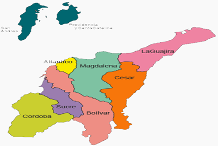
El Caribe colombiano es una región que siempre ha estado marcada por la diversidad. Su territorio combina costas, mares, ríos, ciénagas y montañas, y en él conviven culturas que a lo largo de los siglos han construido modos de vida particulares. Como señalan Martínez y Silva (2020), “el Caribe colombiano es un territorio social, cultural y geográficamente diverso que se construye a través de su multiplicidad de identidades, por lo que no puede entenderse como algo homogéneo” (p. 20). Esta riqueza ha dado lugar a un mosaico de tradiciones que siguen vivas en la actualidad.
Entre los elementos más importantes de la historia de esta región se encuentra el agua. El mar Caribe, el río Magdalena y las grandes ciénagas han sido escenarios de vida, de trabajo y de cultura. Los pueblos ribereños han aprendido a leer los ciclos del río, a reconocer las épocas de abundancia y de escasez, y a convivir con inundaciones y sequías. Como explican los mismos autores, “las comunidades de pescadores artesanales en el Caribe habitan tanto el territorio marino-costero como el continental ribereño, construyendo modos de vida, conocimientos y artes de pesca propios” (Martínez & Silva, 2020, p. 20).
En las riberas del Magdalena, los pescadores han transmitido de generación en generación un saber que combina la pesca con la agricultura. No se trata solo de atrapar peces, sino de un modo de vida que entrelaza la naturaleza, la cultura y la espiritualidad. El agua, las ciénagas y los caños son vistos como parte de la memoria y el patrimonio de los pueblos. Un pescador de Santa Bárbara de Pinto lo expresaba así: “La ciénaga es todo para nosotros, ahí siempre íbamos todos los días, yo aprendí a trabajar fue en la ciénaga pescando con atarraya o anzuelo, mi papá me enseñó. Esa ciénaga era nuestra empresa, nuestra fuente de alimento, de empleo y principal patrimonio” (Martínez & Silva, 2020, p. 24).
Del mismo modo, en las costas del mar Caribe los pescadores han forjado una identidad ligada a las corrientes, los vientos y los secretos del océano. Allí, la pesca artesanal se ha practicado desde antes de la llegada de los conquistadores españoles, y todavía hoy constituye una de las bases de la alimentación y de la economía de miles de familias. No basta con tener las redes o los anzuelos: es necesario conocer las fases de la luna, los comportamientos de los cardúmenes y los cambios en las aguas. Como recuerdan los investigadores, “la relación que establecen los pescadores artesanales marino-costeros con el mar está fundamentada en el acumulado de experiencias transmitidas de generación en generación por medio de relatos, anécdotas, mitos y leyendas” (Martínez & Silva, 2020, p. 31).
Así, tanto en el río como en el mar, los pescadores han sido guardianes de un conocimiento ancestral. Sus técnicas, sus historias y sus luchas forman parte de un patrimonio cultural que da identidad a la región Caribe. En cada faena de pesca, en cada red lanzada al agua y en cada pez que llega a la mesa, se revive una memoria que no pertenece solo al pescador, sino a todo un pueblo que se reconoce en su relación con el agua y con los frutos que ella entrega.
Audio en ingles
Parte 1
Parte 2
Audio en frances
Parte 1
Parte 2
Pescados y Mariscos
La Guajira
En las costas guajiras, bañadas por las aguas cálidas y ricas en nutrientes que provienen de las corrientes marinas, predominan especies marinas como el pargo, el jurel, el róbalo y la sierra. Estos peces no solo forman parte de la dieta cotidiana, sino que también sostienen la economía de los pescadores wayuu y comunidades afrodescendientes que han mantenido la pesca artesanal con chinchorros y redes de enmalle como una tradición viva (Medellín-Mora, Polanco & Navas, 2013). La carne firme y mineralizada de estas especies refleja la salinidad del mar Caribe y constituye uno de los principales atractivos culinarios de la región.
Audio en ingles
Audio en frances
Tipos de peces:
Pargo Rojo: El Pargo rojo es una especie de pez muy apreciada tanto por los pescadores deportivos como por los comerciales. Este pez, que se encuentra en las aguas costeras de La Guajira, es conocido por su carne deliciosa y su tamaño considerable. Los pargos rojos son depredadores y juegan un papel crucial en la cadena alimentaria marina, controlando las poblaciones de otros peces y mariscos.
Audio en ingles
Audio en frances
Sábalo: El Sábalo es otra especie notable que se encuentra en las aguas costeras y estuarios de La Guajira. Este pez es famoso por su tamaño y su capacidad de saltar fuera del agua, lo que lo convierte en un desafío emocionante para los pescadores deportivos. Los sábalos también son importantes para el ecosistema acuático debido a su papel en la cadena alimentaria y su migración entre aguas dulces y saladas.
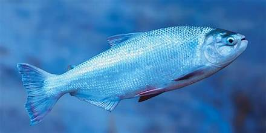
Audio en ingles
Audio en frances
Peces de agua dulce:
Bocachico: El Bocachico es uno de los peces de agua dulce más importantes en los ríos y lagunas de La Guajira. Este pez es una fuente vital de alimento para las comunidades locales y tiene un papel significativo en la economía regional. Los Bocachicos son conocidos por sus hábitos migratorios y su capacidad para adaptarse a diferentes condiciones ambientales, lo que los hace esenciales para la salud del ecosistema fluvial.
Audio en ingles
Audio en frances
Mojarra amarilla: La Mojarra Amarilla es otra especie de pez de agua dulce que habita en La Guajira. Este pez es popular tanto en la pesca comercial como en la pesca deportiva. Las mojarras son conocidas por su resistencia y su capacidad para prosperar en una variedad de hábitats acuáticos, desde ríos hasta lagunas. Su presencia indica la buena salud de los cuerpos de agua en los que viven.
Audio en ingles
Audio en frances
Peces de manglares y estuarios:
Róbalo: El Róbalo es una especie que se encuentra comúnmente en los manglares y estuarios de La Guajira. Este pez es altamente valorado por su sabor y su importancia en la pesca deportiva. Los róbalos son depredadores topes en sus hábitats y juegan un papel crucial en el mantenimiento del equilibrio ecológico en las zonas costeras y manglares.
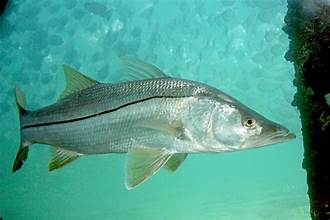
Audio en ingles
Audio en frances
Lisa: La Lisa es otro pez que se puede encontrar en los estuarios y manglares de La Guajira. Este pez es conocido por su capacidad para adaptarse a diferentes salinidades y su hábito de alimentarse de materia orgánica en descomposición, lo que ayuda a mantener la calidad del agua en sus hábitats. Las lisas son importantes tanto para la pesca comercial como para el equilibrio ecológico de los manglares.
En el departamento del Magdalena confluyen dos mundos: el marino y el fluvial. En la costa, pueblos como Taganga y Bahía Concha son conocidos por la abundancia de pargos rojos, meros y róbalos, pescados en pequeñas embarcaciones con técnicas tradicionales. Hacia el interior, el río Magdalena y sus ciénagas alimentan la vida con peces de agua dulce como el bocachico y el bagre rayado, especies que se consumen en sopas, sancochos y sudados típicos de la ribera (Jiménez-Segura & Lasso, 2021). Esta dualidad convierte al Magdalena en un departamento privilegiado para entender cómo el mar y el río dialogan en la mesa.
Audio en ingles
Audio en frances
Peces de agua dulce:
Bagre Rayado: El Bagre rayado es una especie emblemática de los ríos del Magdalena. Este pez, conocido por sus distintivas rayas negras, juega un papel crucial en la dieta de las comunidades locales y es una fuente importante de ingresos para los pescadores.
Audio en ingles
Audio en frances
Bocachico: El Bocachico es otro pez icónico de los ríos y lagunas de Magdalena. Es conocido por su capacidad de migración, viajando largas distancias para reproducirse. Su carne es muy apreciada en la gastronomía local, siendo un ingrediente esencial en platos tradicionales como el sancocho de Bocachico.
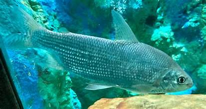
Audio en ingles
Audio en frances
Peces de agua salada:
Pargo Rojo: El Pargo rojo es una especie costera muy apreciada por su carne blanca y sabrosa. Hábitat en arrecifes y manglares, contribuyendo significativamente a la economía pesquera de la región. Además, su presencia en los ecosistemas costeros es vital para mantener el equilibrio ecológico./li>
Audio en ingles
Audio en frances
Barracuda: En las costas del Caribe de Magdalena, la Barracuda es una de las especies más comunes. Este pez depredador es conocido por su velocidad y ferocidad. Aunque no es muy popular en la pesca comercial, es altamente valorado por los pescadores deportivos debido a su lucha intensa cuando es capturado.
El Atlántico se distingue por sus ciénagas y ríos menores que desembocan en el mar, donde especies de agua dulce como la tilapia y el bocachico han sido registradas en los inventarios de peces de agua dulce de este departamento (Dugandia et al., 1994). En la franja costera, Barranquilla y Puerto Colombia reciben capturas marinas de róbalo y pargo, que llegan frescos a los mercados locales. Los pescadores de la zona han sabido combinar el consumo de peces de río y mar en preparaciones que expresan la identidad culinaria de un territorio anfibio.
Audio en ingles
Audio en frances
Cod: El bacalao es una de las especies de peces más emblemáticas que se encuentran en el Océano Atlántico. Piense en él como un gentil gigante del mar: grande y, a menudo, bastante amigable con los buceadores humanos. Pero no te dejes engañar por su tamaño; ¡El bacalao puede tener un gran impacto en cuanto a sabor! Este pescado de pulpa blanca ha sido un alimento básico en las mesas durante siglos, al igual que el humilde pan de la despensa. Su sabor suave y textura firme lo hacen lo suficientemente versátil como para prepararlo de innumerables maneras: a la parrilla, al horno o incluso ahumado.
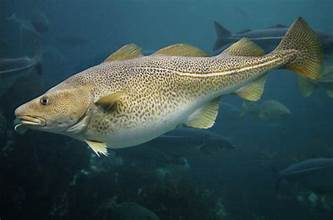
Audio en ingles
Audio en frances
Eglefino: Cuando buscas algo similar al bacalao pero con un sabor ligeramente más pronunciado, el eglefino es tu opción preferida. Imagínese el eglefino como el hermano menor del bacalao; Puede que se parezcan, pero el eglefino añade un poco más de profundidad y riqueza a los platos. Su textura densa y su carne firme lo hacen perfecto para quienes aprecian un buen bocado carnoso en el pescado. El eglefino se puede preparar de muchas maneras, desde el clásico pescado con patatas fritas hasta una simple fritura o incluso como protagonista de una abundante sopa de pescado.
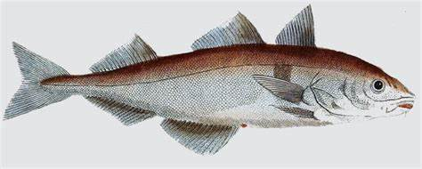
Audio en ingles
Audio en frances
Salmón: Ahora pasemos al salmón: piense en este pez como la estrella de rock del Océano Atlántico. Con su carne rosa vibrante y su rico sabor mantecoso, es difícil no enamorarse de este pescado versátil. Como un artista carismático, el salmón se puede preparar de muchas maneras: ahumado, a la parrilla, al horno o incluso crudo en forma de sushi. Su alto contenido de omega-3 lo convierte en una excelente opción para quienes buscan mejorar la salud de su corazón y su bienestar general. Imagina tu cuerpo como un teatro: el salmón es la estrella que ilumina el escenario con su valor nutricional.
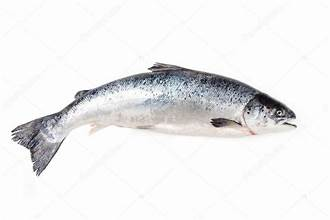
Audio en ingles
Audio en frances
Atún: El atún puede parecer una incorporación más moderna a la familia de peces del Atlántico, pero en realidad ha estado nadando en estas aguas durante milenios. Conocido por su sabor fuerte y sabroso y su textura firme, el atún suele ser el héroe anónimo de muchos platos. Imagínelo como el compañero confiable que siempre da un paso al frente cuando es necesario; Ya sea que estés preparando un refrescante rollo de sushi o una abundante ensalada de atún, este pescado nunca te decepcionará. Su sostenibilidad en diversas presentaciones, como enlatada o fresca, la convierte en una opción accesible para todos.
Audio en ingles
Audio en frances
Tiburones: Por último, hablemos de los tiburones: estos depredadores del océano a menudo son vistos como los villanos del mar. Sin embargo, no todos los tiburones son iguales. Algunas especies, como el tiburón zorro y el gran tiburón blanco, en realidad están protegidas debido a su papel fundamental en el mantenimiento de los ecosistemas marinos. Imagínese un bosque; Así como los árboles mantienen el ecosistema equilibrado, los tiburones desempeñan un papel vital en el mantenimiento del equilibrio del océano. Su presencia es crucial para mantener poblaciones de peces saludables, de forma muy similar a cómo las abejas polinizan las flores. Entonces, si bien puede ser fácil temer a los tiburones, comprender su importancia puede cambiar nuestra perspectiva e inspirarnos a protegerlos.
En Bolívar, Cartagena y sus corregimientos costeros -La Boquilla, Punta Canoa, Pasacaballos— siguen siendo centros de pesca artesanal. Allí predominan especies marinas como el róbalo, la mojarra lora y el pargo lunarejo, fundamentales en los mercados de Bazurto y en las cocinas isleñas de Barú y el Rosario (Observatorio EPA Cartagena, 2021). En las ciénagas interiores, como la de la Virgen, también se pescan especies de agua dulce, manteniendo un equilibrio entre lo marino y lo fluvial.
Audio en ingles
Audio en frances
Pargo: También llamado rubiel, mazote bocinero o urta, es un pescado semigraso de agua salada. Esta especie se caracteriza por habitar en fondos de arenas y piedras a profundidades marítimas entre los 20 y 40 metros.
Pargos es una especie de pez perciforme de la familia Sparidae.
Es común reconocerlo por su cuerpo ovalado, un hocico corto, aleta dorsal y pectorales largos. Además, son hermafroditas, es decir, los adultos primero son hembras y se convierten en machos con la edad.
Se encuentran en el océano Atlántico desde las islas británicas hasta el sur del mar Caribe. También, comen camarones, nécoras pequeñas y percebes.
Audio en ingles
Audio en frances
Bagre: El bagre, también conocido como pez gato, es uno de los peces más conocidos en el mundo, debido a sus características y grandes bigotes que sobresalen.
El bagre es un pez que se caracteriza por tener bigotes en su mandíbula superior.
Este pez logra tener una longitud de tres metros y alcanza los 250 kg de peso, por eso es una de las fuentes que contiene más grasas y carne.
En Colombia, el bagre es muy conocido por ser una de las especies más consumidas, debido a su sabor suave y Merluza
Es un pescado blanco y de agua salada que se encuentra en el océano Atlántico y en el mar Mediterráneo a una profundidad entre los 50 y 500 metros.
Se conoce por tener el cuerpo largo, blando, su cabeza aplastada, sus ojos grandes y hundidos. La boca tiene dos filas de dientes y su color es negro.
Los beneficios de la merluza se traducen en varias proteínas de alto valor biológico. Las más importantes son las vitaminas B1, B2,B3, B9 y el ácido fólico.
dulce.
Audio en ingles
Audio en frances
Atún: El atún es conocido como rojo y azul. Es un pez óseo de la familia escómbridos y mide 40 cm. Su peso ronda entre los 6,4 kg hasta los 600 kg.
El consumo de este pez se esparce por todo el mundo, debido a la gran demanda que tiene su carne de color rosada, que en ocasiones tiene un tono rojo intenso.
Otra característica es que es un animal bastante rápido: puede alcanzar velocidades de 70 km por hora. El grupo Thunnus es un género de peces óseos marinos.
Audio en ingles
Audio en frances
Mojarra: La mojarra es un pez que pertenece al agua salada. Es muy conocido en la gastronomía colombiana por ser uno de los platos típicos de la costa Caribe. También logra alcanzar una medida de 40 cm de largo y llega a pesar entre 350 y 380 gramos.
Este espécimen contiene proteínas y vitaminas D, B, E, fósforo y calcio que sirven para el cuidado de la piel, el cabello, las uñas, el fortalecimiento de huesos y la salud de la persona. Las mojarras se distribuyen por la mayoría de los mares tropicales.
El Golfo de Morrosquillo, en Sucre, es uno de los escenarios más ricos en biodiversidad marina. En sus aguas se capturan especies como el pargo pluma, el jurel y el róbalo, que se comercializan en Tolú y Coveñas. Mientras tanto, en las ciénagas asociadas al río San Jorge y a los humedales de la región, los pescadores artesanales extraen bocachicos y doncellas, que forman parte de la dieta diaria de las familias ribereñas (Fauna Caribe Colombiana, 2022).
Audio en ingles
Audio en frances
Peces del mar en sucre:
Pargo: El pargo es uno de los peces más apreciados por los pescadores de la costa de Sucre, sobre todo en zonas como Tolú y Coveñas. Es de carne blanca, firme y con gran sabor. Se captura en aguas marinas poco profundas, usando trasmallos y anzuelos. Es muy buscado porque tiene buen precio en el mercado y es base de muchos platos típicos costeños.
Audio en ingles
Audio en frances
Róbalo: El róbalo es un pez de cuerpo alargado, que se pesca cerca de la orilla y en estuarios donde se mezcla agua dulce y salada. En Sucre es muy apetecido porque su carne es suave y versátil en la cocina. Los pescadores lo atrapan con anzuelo o redes pequeñas, sobre todo en madrugadas y atardeceres.
Audio en ingles
Audio en frances
Sierra: La sierra es un pez marino rápido y fuerte, que suele capturarse en mar abierto con redes o líneas de mano. Su carne es apreciada para hacer asados y sudados. Los pescadores lo consideran un reto, porque al ser veloz requiere experiencia y buen manejo de las artes de pesca
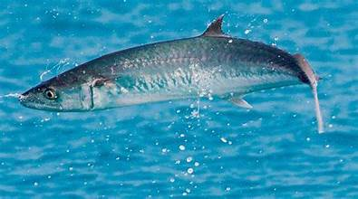
Audio en ingles
Audio en frances
Mojarra de mar: Muy común en las costas sucreñas, sobre todo en pescas de pequeña escala. Es un pez más pequeño, de carne suave, y se consume fresco en fritos y sopas. Generalmente se atrapa con atarraya o redes cortas.
Audio en ingles
Audio en frances
Peces de río y ciénagas:
Bagre: El bagre es uno de los peces más importantes de los ríos San Jorge y Magdalena. Es grande, de carne sabrosa y muy consumido en la región. Se pesca con anzuelos, atarrayas y trampas artesanales. Los pescadores lo valoran porque, además de alimentar a las familias, tiene buena demanda en los mercados locales.
Audio en ingles
Audio en frances
Bocachico: El bocachico es quizá el pez más tradicional de los ríos y ciénagas de Sucre. Se reconoce por su boca pequeña y su costumbre de “remontar” el río en época de subienda. Se atrapa con atarraya o chinchorro. Es la base de muchos platos típicos como el bocachico frito o en viuda.
Audio en ingles
Audio en frances
Dorada: La dorada es otro pez muy buscado en las aguas dulces del San Jorge y sus ciénagas. Se caracteriza por su color brillante y su fuerza al momento de ser capturado. Suele atraparse con anzuelos y carnada natural. Es muy apreciada porque su carne es de excelente calidad.
Audio en ingles
Audio en frances
Mojarra del rio: Más pequeña que la del mar, pero muy abundante en ciénagas y ríos. Se pesca con atarraya o anzuelos, y es consumida en las comunidades ribereñas como parte esencial de la dieta diaria.
Audio en ingles
Audio en frances
Córdoba
En Córdoba, la pesca se concentra tanto en la costa del Caribe como en las ciénagas del Sinú. En el litoral se pescan especies marinas como el pargo coliamarillo y el jurel, que llegan a los puertos de San Antero y Puerto Escondido. En las ciénagas del Sinú, por su parte, la captura del bocachico es vital, no solo como alimento sino como símbolo cultural de la ribera cordobesa. Estas especies de río, blandas y de sabor suave, contrastan con la firmeza de los pescados marinos, y juntas muestran la riqueza de la región (Jiménez-Segura & Lasso, 2021).
Audio en ingles
Audio en frances
Dorado: El dorado es una de las especies más buscadas por los pescadores en Córdoba. Este pez de agua dulce es conocido por su gran tamaño y su fuerza al momento de la captura. Se encuentra en ríos como el Paraná, el Salado y el Suquía. Para pescar dorados, se recomienda utilizar señuelos de colores llamativos y técnicas como el baitcasting o el spinning.
Audio en ingles
Audio en frances
Trucha: La trucha es otro de los pescados más populares en Córdoba. En esta provincia se pueden encontrar tanto truchas arcoíris como truchas marrones. Los ríos de montaña, como el Río de los Condores y el Río de los Condores, son ideales para pescar truchas. Se recomienda utilizar moscas artificiales y técnicas de pesca con mosca para obtener buenos resultados.
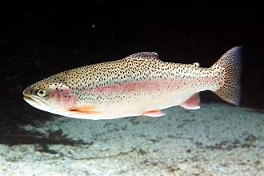
Audio en ingles
Audio en frances
Pejarrey: El pejerrey es una especie muy apreciada por su sabor y su tamaño. Se encuentra en lagunas y embalses de Córdoba, como el Embalse Río Tercero y el Embalse San Roque. Para pescar pejerrey, se recomienda utilizar equipos livianos y cebos como mojarras o filetes de pescado. También tener en cuenta los horarios de pesca, ya que el pejerrey suele ser más activo durante las primeras horas de la mañana y las últimas de la tarde.
Aunque no es costero, el Cesar se vincula profundamente al río Magdalena y sus afluentes. Allí, la pesca de bagres, doncellas y bocachicos sigue siendo una práctica tradicional entre los pueblos ribereños. Estos peces no solo son fuente de alimento, sino también parte de festividades gastronómicas, como los sancochos colectivos que reúnen a familias enteras en las riberas. Los estudios de peces de la cuenca del Magdalena documentan la importancia de estas especies en la dieta y economía ribereña (Jiménez-Segura & Lasso, 2021).
Audio en ingles
Audio en frances
Peces de agua dulce: Tesoros de los rios y arroyos
Los ríos y arroyos de Cesar son el hogar de numerosas especies de peces adaptados a la vida en agua dulce. Entre ellos se encuentran el Bocachico, la Bagre Rayado y la Dientona, que prosperan en las corrientes rápidas y los remansos de estos cuerpos de agua.
Audio en ingles
Audio en frances
Peces de los humedales: Adaptaciones a ambientes pantanosos
Los humedales de Cesar albergan una diversidad de peces adaptados a los ambientes pantanosos y lagunares. Especies como la Tilapia, el Pez Sapo y la Corroncha son comunes en estas áreas, donde encuentran alimento y refugio entre la vegetación acuática y los bancos de lodo.
Audio en ingles
Audio en frances
Observa los peces explorando la costa caribeña de cesar
La costa caribeña de Cesar ofrece hábitats marinos ricos en vida acuática. Entre los peces que se encuentran en estas aguas se incluyen el Robalo, la Mojarra y el Jurel, que migran entre los arrecifes coralinos y los manglares en busca de alimento y reproducción.
En las islas, la pesca está dominada por el mar Caribe profundo y cristalino. Allí se destacan especies marinas como el pargo criollo, el mero guasa y el atún aleta amarilla, capturados en faenas que combinan conocimiento tradicional raizal con técnicas modernas. Estas especies, de carnes firmes y sabor intenso, son parte esencial de la gastronomía isleña, en la que se preparan fritos, guisos y caldos que reflejan la herencia cultural afrocaribeña (INVEMAR, 2017).
Audio en ingles
Audio en frances
Bonito: El bonito es uno de los peces más representativos en la pesca de San Andrés. Se trata de un pez de aguas abiertas, muy rápido y fuerte al momento de la captura, lo que lo hace atractivo para los pescadores artesanales. Generalmente se pesca en mar abierto con anzuelos y carnada natural. Su carne es firme, de buen sabor, y se utiliza en preparaciones locales como guisos, frituras y también en platos más modernos.
Audio en ingles
Audio en frances
Saltona Roja: La saltona roja es muy apetecida por su color llamativo y por la calidad de su carne. Es un pez que habita en zonas cercanas a los arrecifes, donde se alimenta de pequeños peces y crustáceos. Su carne blanca y jugosa es ideal para freír o asar, siendo un ingrediente frecuente en la cocina típica isleña. Su captura es principalmente artesanal, usando redes o líneas de mano.
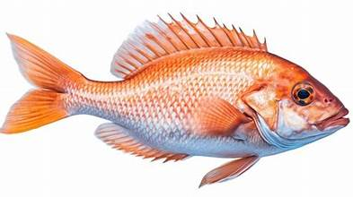
Audio en ingles
Audio en frances
Barracuda: La barracuda es un pez depredador de cuerpo alargado y dientes filosos, que suele encontrarse tanto en arrecifes como en aguas abiertas. Es conocido por la fuerza que ofrece durante la pesca, lo que lo convierte en un reto para los pescadores. Su carne es de sabor intenso, aunque debe prepararse con cuidado debido a la posibilidad de acumulación de toxinas en ejemplares grandes. En San Andrés se consume principalmente frita o en sancocho de pescado.
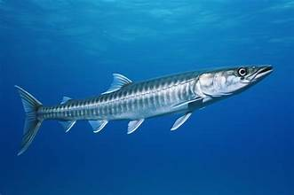
Audio en ingles
Audio en frances
Langosta: La langosta del Caribe es uno de los mariscos más valiosos en las islas. Vive en fondos rocosos y arrecifes, donde se esconde durante el día. La captura de langosta es regulada y suele hacerse con trampas o de forma artesanal por buzos locales. Su carne es muy apreciada por su sabor dulce y suave, utilizada en sopas, arroces y platos típicos como la langosta al ajillo.
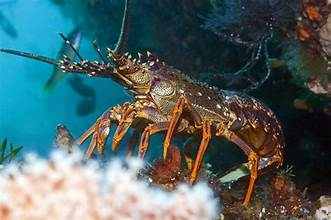
Audio en ingles
Audio en frances
Caracol Pala: El caracol pala es un molusco grande y característico del Caribe insular. Vive en zonas arenosas y praderas marinas. Durante muchos años fue una de las principales especies extraídas en San Andrés, aunque hoy su pesca está controlada para evitar la sobreexplotación. Su carne se utiliza en sopas, guisos y ceviches, siendo muy importante en la gastronomía isleña.
Audio en ingles
Audio en frances
Cangrejo Negro: El cangrejo negro es una especie terrestre muy abundante en San Andrés y Providencia, especialmente durante la época de lluvias cuando se desplaza en grandes cantidades hacia el mar. Este crustáceo es clave en la cultura gastronómica de las islas, donde se prepara en sopas, empanadas y guisos tradicionales. Además de su sabor intenso, es un símbolo de identidad culinaria para los isleños.
Audio en ingles
Audio en frances
Mariscos
Atlantico
En el departamento del Atlántico, gracias a su ubicación costera sobre el mar Caribe, los mariscos son abundantes y variados. En las zonas de Puerto Colombia y Barranquilla se extraen camarones, langostinos, jaibas, cangrejos azules y ostras. Los camarones son muy utilizados en arroces y ceviches, mientras que las jaibas y los cangrejos se cocinan en sopas o en su jugo, manteniendo su sabor natural. También se encuentran almejas y caracoles marinos que los pescadores capturan artesanalmente en la costa. Las ostras se cultivan en algunas zonas costeras, y su consumo es apreciado tanto crudo como en preparaciones calientes.
Audio en ingles
Audio en frances
Bolivar
En Bolívar, especialmente en Cartagena y en los municipios costeros como Barú, Ararca y Bocachica, los mariscos forman parte esencial de la cultura gastronómica. Aquí se pescan camarones, calamares, langostas, jaibas y ostras. En las Islas del Rosario también se encuentran mejillones y diferentes tipos de caracoles marinos. Los habitantes locales utilizan los camarones y calamares en arroces, empanadas de mariscos, y en cazuelas con leche de coco. La langosta es uno de los mariscos más valiosos del departamento y suele servirse asada o en mantequilla, siendo considerada un plato de lujo en la región.
Audio en ingles
Audio en frances
Magdalena
El departamento del Magdalena, con Santa Marta como capital, posee una de las mayores riquezas marinas del Caribe colombiano. En sus bahías y playas se encuentran langostas, camarones, pulpos, calamares, jaibas, almejas y ostras. En los pueblos costeros como Taganga o Ciénaga, los pescadores capturan mariscos artesanalmente y los venden frescos. El pulpo es muy apreciado y se prepara en guisos o a la parrilla. También se consume mucho el camarón rosado, muy valorado por su sabor dulce y textura firme. Las ostras del Parque Tayrona son conocidas por su pureza y se degustan frescas, siendo muy demandadas por turistas y locales.
Audio en ingles
Audio en frances
La Guajira
La Guajira cuenta con una extensa línea costera que le brinda una riqueza marina excepcional. En Cabo de la Vela y Riohacha se capturan langostas, camarones, cangrejos, pulpos y mejillones. La langosta guajira es reconocida en todo el país por su tamaño y sabor, siendo una fuente importante de sustento económico para las comunidades Wayuu. También se encuentran caracoles marinos y conchas, que se utilizan en sopas o se venden a los visitantes. En la gastronomía tradicional, los mariscos se mezclan con leche de coco, plátano y ají dulce, creando sabores autóctonos del desierto y el mar.
Audio en ingles
Audio en frances
Córdoba
Aunque Córdoba no tiene una gran extensión costera, el Golfo de Morrosquillo le otorga acceso a una importante variedad de mariscos. En municipios como San Antero y Puerto Escondido se extraen cangrejos, camarones, jaibas, ostras y almejas. También se encuentran pequeños pulpos y calamares que se utilizan en preparaciones caseras. Los mariscos de esta zona son conocidos por su frescura y por ser una fuente importante de proteínas para los habitantes costeros. En la gastronomía local destacan los arroces de camarón y las cazuelas con jaiba, leche de coco y verduras frescas.
Audio en ingles
Audio en frances
Sucre
En Sucre, especialmente en el Golfo de Morrosquillo y en municipios costeros como Tolú y Coveñas, hay una notable abundancia de mariscos. Se capturan langostinos, cangrejos, calamares, pulpos, ostras, caracoles y camarones. Los pescadores artesanales aprovechan las mareas para recolectar almejas y conchas. En los restaurantes costeros es común encontrar cazuela de mariscos, coctel de camarón, jaibas rellenas y arroces con langosta. Los mariscos sucreños se caracterizan por tener un sabor suave y natural, ya que las aguas del Golfo son menos saladas que otras zonas del Caribe, lo que influye en el gusto final de las especies.
Audio en ingles
Audio en frances
Cesar
Aunque Cesar no es un departamento costero, en su zona baja, cercana a la Ciénaga de Zapatosa, se encuentran algunos crustáceos y moluscos de agua dulce. Allí se pueden hallar camarones de río, jaibas de agua dulce y pequeños cangrejos. Estos mariscos se utilizan en sopas y arroces tradicionales, combinados con productos agrícolas de la región. Aunque no tienen la misma variedad marina que otros departamentos del Caribe, forman parte de la dieta local y representan un recurso pesquero de importancia en las comunidades ribereñas.
Audio en ingles
Audio en frances
Camarón: El camarón es uno de los mariscos más abundantes y apreciados del Caribe colombiano. Se encuentra tanto en aguas costeras como en estuarios, donde las aguas saladas y dulces se mezclan. En departamentos como Atlántico, Bolívar, Sucre y Magdalena se capturan varias especies, entre ellas el camarón rosado y el camarón blanco. Su carne es tierna, de sabor dulce y textura firme, lo que lo hace ideal para preparaciones como arroces, ceviches, empanadas, cocteles y sopas. En la gastronomía costeña, el arroz con camarones y el ceviche cartagenero son dos de los platos más representativos. Además, el camarón es una fuente importante de proteína y minerales, muy valorado por su aporte nutritivo y su versatilidad en la cocina.
Audio en ingles
Audio en frances
Langosta: La langosta es considerada el marisco más fino del Caribe colombiano. Se encuentra especialmente en las costas de La Guajira y el archipiélago de San Andrés y Providencia, aunque también aparece en zonas del Golfo de Morrosquillo. Su cuerpo cubierto por un caparazón rígido protege una carne blanca y jugosa de sabor intenso. Las langostas son capturadas por pescadores artesanales mediante trampas o buceo en arrecifes coralinos. Su preparación más tradicional es a la parrilla o al ajillo, aunque también se cocina en salsa blanca o con mantequilla y limón. En la cultura gastronómica del Caribe, la langosta representa un producto de lujo, reservado para celebraciones o el turismo de alto nivel.
Audio en ingles
Audio en frances
Jaiba: La jaiba, también conocida como cangrejo azul, es muy común en las costas de Atlántico, Sucre, Córdoba y Bolívar. Habita en manglares, estuarios y zonas de lodo, donde se alimenta de pequeños organismos. Su carne es delicada y muy sabrosa, especialmente la que se encuentra en las pinzas. En los pueblos costeros, las jaibas son capturadas a mano o con trampas artesanales. En la cocina se utilizan en sopas, guisos o rellenas al horno, mezcladas con leche de coco, arroz y especias. En muchas familias costeñas, la cazuela de jaiba es una receta tradicional que se transmite de generación en generación.
Audio en ingles
Audio en frances
Cangrejo: El cangrejo es otro de los crustáceos más comunes del Caribe colombiano, presente en La Guajira, Córdoba y Sucre. Hay distintas especies, entre ellas el cangrejo moro y el cangrejo violinista. Son recolectados en zonas rocosas o manglares y su carne es muy apreciada por su sabor intenso y textura firme. Se utilizan en platos como el arroz con cangrejo, las empanadas de cangrejo y las sopas marineras. En la tradición gastronómica del Caribe, los cangrejos también se preparan guisados con coco o con ají, acompañados de plátano o yuca, siendo un alimento de gran valor cultural y nutritivo.
Audio en ingles
Audio en frances
Pulpo: El pulpo es un molusco muy popular en los departamentos costeros como Magdalena y La Guajira. Habita en zonas rocosas y arrecifes, donde se camufla para cazar pequeños peces o crustáceos. Su carne, firme y fibrosa, requiere una cocción adecuada para lograr la textura perfecta. Los pescadores lo capturan mediante buceo o trampas manuales. En la gastronomía caribeña se prepara en guisos, ensaladas o a la parrilla. En Santa Marta y Taganga es común el pulpo en su tinta, acompañado con arroz blanco o patacones. Además de su sabor inconfundible, el pulpo es una fuente rica en hierro, proteínas y minerales.
Audio en ingles
Audio en frances
Calamar: El calamar es otro molusco muy consumido en la región. Se encuentra en aguas profundas y también cerca de las costas, especialmente en Bolívar y Sucre. Su carne blanca y suave es muy valorada por su sabor neutro y su capacidad de absorber condimentos. En la cocina tradicional se utiliza en anillos fritos, arroces, cazuelas y sopas. Los calamares rellenos con mariscos o arroz son una receta clásica del Caribe colombiano. Además, su tinta se aprovecha para preparar salsas de color oscuro y sabor intenso que se sirven con pasta o arroz. Es un marisco de alta calidad y con gran aporte proteico.
Audio en ingles
Audio en frances
Ostras: Las ostras son moluscos bivalvos que habitan en las costas rocosas y manglares del Caribe, especialmente en Bolívar, Sucre y Magdalena. Son muy apreciadas por su sabor marino concentrado y su textura cremosa. En algunos lugares como Cartagena y las Islas del Rosario, se cultivan de forma controlada. Las ostras se consumen frescas, directamente abiertas en su concha, o cocinadas al vapor, gratinadas o en sopas. Además de su valor gastronómico, las ostras son ricas en zinc y se consideran un alimento afrodisíaco natural. En la cultura caribeña, degustar ostras frescas frente al mar es una experiencia tradicional muy valorada por locales y turistas.
Audio en ingles
Audio en frances
Almejas: Las almejas se encuentran enterradas en la arena de las costas del Golfo de Morrosquillo y en manglares del Atlántico y Bolívar. Son mariscos pequeños pero muy sabrosos, utilizados en sopas, arroces y guisos. Su carne es jugosa, con un sabor a mar muy característico. Los pescadores las extraen manualmente durante la marea baja, una práctica que ha pasado de generación en generación. En la gastronomía tradicional, las almejas suelen cocinarse con leche de coco, ajo y cebolla, o en caldos con yuca y plátano verde, reflejando la unión entre el mar y la tierra.
Audio en ingles
Audio en frances
Mejillones: Los mejillones son moluscos que viven adheridos a las rocas o estructuras sumergidas. En el Caribe colombiano se encuentran en las costas de Bolívar y La Guajira. Su carne es suave y tiene un sabor salado característico. Se preparan hervidos, gratinados o en cazuelas junto a camarones y calamares. Son muy nutritivos y una excelente fuente de hierro y vitamina B12. En las comunidades costeras, los mejillones representan un alimento económico y abundante, muy presente en la dieta diaria.
Audio en ingles
Audio en frances
Caracoles marinos: Los caracoles son moluscos de concha espiral que abundan en las costas rocosas y arrecifes. En La Guajira y Bolívar son muy apreciados. Se recolectan manualmente y se cocinan en sopas o guisos, aunque también se consumen fritos o en ceviches. Su carne tiene una textura firme y un sabor fuerte, por lo que suele mezclarse con coco o hierbas aromáticas para suavizar su gusto. En algunas zonas del Caribe, el caracol es considerado un alimento ancestral, vinculado con las costumbres indígenas y afrodescendientes.
Audio en ingles
Audio en frances
Langostinos: Los langostinos son mariscos similares a los camarones, pero de mayor tamaño. Se encuentran en las costas de Sucre, Bolívar y Córdoba. Su carne es blanca, firme y muy sabrosa. Son ideales para platos gourmet como langostinos al ajillo, en salsa de coco o a la parrilla. En los pueblos costeros, su captura es una actividad importante durante ciertas temporadas del año, cuando estos crustáceos se acercan a las playas. Su sabor dulce y su textura los convierten en uno de los mariscos más elegantes del Caribe colombiano.
Audio en ingles
Audio en frances
Conchas y moluscos menores: En los manglares y zonas de estuario se encuentran diferentes tipos de conchas, navajas y pequeños moluscos que también forman parte de la dieta local. Se utilizan para preparar caldos, sopas o se mezclan con arroz y plátano. Son muy apreciados por su sabor marino intenso y por su valor nutritivo. En los pueblos pesqueros, recolectar conchas es una labor tradicional, realizada principalmente por mujeres durante la marea baja.
Audio en ingles
Audio en frances
Los Pescadores
La figura del pescador o pescadora es tan antigua como la humanidad misma, convertida en sinónimo de supervivencia, tradición y conexión con los mares y ríos del mundo. Hoy en día, sigue siendo un oficio vital que trasciende la mera actividad económica, reflejando un estilo de vida y una pasión por el mar y sus recursos.
¿Qué es un pescador?
El término pescador o pescadora refiere a aquella persona que se dedica a la extracción de especies acuáticas como modo de subsistencia o negocio. Ya sea en aguas dulces o saladas, esta profesión abarca una amplia gama de técnicas y conocimientos pasados de generación en generación, y también se enriquece con innovaciones tecnológicas.
Los pescadores pueden ejercer la pesca comercial, destinada a la venta y distribución masiva, o la pesca recreativa, que se practica como una actividad deportiva o de ocio. Ambas modalidades requieren una comprensión profunda del entorno marino y fluvial, así como de las especies de peces y su comportamiento.
En la actualidad, los pescadores deben balancear su práctica con la necesidad de promover la sostenibilidad pesquera, adaptándose a numerosas normativas diseñadas para proteger los ecosistemas acuáticos.
La vida de un pescador
Vivir del mar implica una rutina que va más allá de la jornada laboral típica. La vida de un pescador profesional demanda madrugar antes del amanecer, enfrentarse a condiciones climáticas adversas y tener una gran resistencia física y mental.
Los pescadores se enfrentan a riesgos que requieren una constante preparación y experiencia. Accidentes como tormentas, naufragios, o encuentros con fauna peligrosa son situaciones que un pescador puede llegar a enfrentar en su día a día.
Además, los pescadores pasan largos períodos en el mar, alejados de sus seres queridos. Esta separación, sumada a las largas jornadas de trabajo, forja un carácter resiliente y apasionado por su oficio.
El equipamiento de un pescador también es parte fundamental de su vida. Desde redes y anzuelos hasta sofisticados sistemas de navegación y localización de cardúmenes, los pescadores deben conocer y gestionar su equipo a la perfección.
Significado bíblico de pescador
En el contexto bíblico, la figura del pescador adquiere un simbolismo especial. Jesús, conocido por relacionarse con pescadores del mar de Galilea, los convirtió en símbolos de fe, llamándoles a ser «pescadores de hombres».
La representación del pescador en la Biblia también resalta la humildad y la laboriosidad, cualidades que definen a quienes ejercen esta profesión con honor y respeto por la naturaleza.
Oficio de pescador explicado:
El oficio de pescador es tan variado como las aguas en las que trabajan. No se limita a la captura de peces, sino que también involucra la cría y el cuidado de especies en piscifactorías, la investigación de hábitats y el monitoreo de la salud de los océanos.
La formación de un pescador profesional puede incluir conocimientos en biología marina, mecánica náutica, meteorología y primeros auxilios, todos cruciales para la seguridad y eficacia de su labor.
Además, la pesca es una industria que impulsa economías locales y globales. Los pescadores son parte de una cadena que provee millones de empleos y es responsable del suministro de un porcentaje importante de las proteínas consumidas mundialmente.
Con la evolución de las normativas y la creciente preocupación por la conservación, los pescadores también desempeñan un papel activo en la implementación de prácticas sostenibles y la protección de los ecosistemas marinos.
Pescador sinónimo y términos relacionados
La palabra pescador puede ser sinónimo de términos como «marinero» o «pescadero», aunque cada uno tiene particularidades específicas. El marinero generalmente se asocia con la navegación y el manejo de embarcaciones, mientras que el pescadero es quien vende pescado en tiendas o mercados.
Otras denominaciones incluyen «lanzador», refiriéndose a quien usa la caña de pescar, o «trasmallero», en alusión a quien pesca con redes de enmalle.
Además, existen términos especializados según la técnica de pesca utilizada, como «palangrero», «cerquero» o «atunero», reflejando la diversidad y especificidad de este milenario oficio.
Oficio de pescador para niños
El oficio de pescador puede ser una fuente de fascinación y educación para los niños. A través de cuentos, visitas a acuarios o excursiones de pesca controladas, los más pequeños pueden aprender sobre la vida marina y la importancia de preservar nuestro entorno acuático.
Enseñar a pescar, ya sea en un contexto de pesca recreativa o simplemente como una habilidad de vida, inculca valores como la paciencia, la sostenibilidad y el respeto por la naturaleza.
Los cuentos e historias sobre pescadores también sirven para explicar a los niños la historia del oficio y su relevancia en diferentes culturas a lo largo del tiempo.
Esperamos que este artículo haya brindado una nueva perspectiva sobre la vida y la profesión de los pescadores y pescadoras. Ahora, profundicemos en algunas inquietudes relacionadas con este fascinante oficio.
Audio en ingles parte 1
Audio en ingles parte 2
Audio en frances parte 1
Audio en frances parte 2
Preguntas frecuentes sobre el oficio de pescador/pescadora
¿Qué significa ser pescadora?
Ser pescadora significa asumir un oficio tradicionalmente masculino, enfrentándose a los mismos desafíos y demandas que sus contrapartes masculinas. Implica una gran destreza, conocimiento del mar y de las técnicas de pesca, y a menudo un compromiso con la conservación marina.
Las pescadoras, al igual que los pescadores, pueden trabajar en la pesca comercial, recreativa o la acuicultura, y deben estar igualmente preparadas para enfrentar las dificultades propias de la profesión.
¿Qué significa pescadoras?
La palabra «pescadoras» se refiere al plural femenino de pescador. Denota un grupo de mujeres que participan en la actividad pesquera. Representa la inclusión y el reconocimiento de las mujeres dentro de una industria que está equilibrando su fuerza laboral.
Con mayor visibilidad y oportunidades, las pescadoras están ganando terreno en un campo tradicionalmente dominado por hombres, demostrando su capacidad y pasión por este noble oficio.
¿Qué quiere decir el refrán pescador que pesca un pez pescador es?
Este refrán sugiere que el título o la identidad de «pescador» se gana con la acción de pescar. No se trata simplemente de un título, sino de la demostración de habilidad y éxito en la pesca. Es una forma de decir que las acciones definen lo que somos, más allá de las palabras o la apariencia.
En un sentido más amplio, el refrán también puede interpretarse como un llamado a la autenticidad y a la validación de nuestras habilidades a través de la práctica y la experiencia.
¿Cómo se escribe pescador o pescador?
La correcta escritura en español es «pescador» para referirse a un hombre que se dedica a la pesca, y «pescadora» para una mujer. La diferencia radica en la terminación, que se ajusta al género del individuo. Ambos términos son gramaticalmente correctos y aplicables según el contexto.
Es importante utilizar la terminología adecuada para reconocer la profesión y el género de quien la ejerce, asegurando así el debido respeto y precisión en la comunicación.
En resumen, el mundo de la pesca es profundo y variado, lleno de tradiciones, desafíos y una constante evolución. El pescador o pescadora moderno no solo es un proveedor de alimentos, sino también un custodio del mar y sus recursos. A través de la historia, las técnicas y la pasión por este antiguo oficio, se teje una narrativa que es fundamental para entender nuestra relación con el mundo natural.
Audio en ingles
Audio en frances
Voces de los Pescadores
Ángel Mosquera (AM)
"Cuando yo empecé a pescar con mi abuelo, se pescaba con arpón, con gancho y con un arte muy ancestral que se llamaba esterao. Hubo un tiempo en que se capturaba mucho pescado, porque la gente era poca y el pescado y la fauna eran abundantes. Muchas veces era pa' regalársela a la gente, porque en esa época nadie comercializaba pescado."
Audio en ingles
Audio en frances
Francisco Alegría (FA)
"Anteriormente yo echaba una red y llamaba dos pueblos, que eran Cuevita y Virudó, para que vinieran a recoger pescado. A veces ni alcanzaban a recogerlo todo, en esa época no había trasmallo electrónico."
Audio en ingles
Audio en frances
¿Cuáles son las dificultades que hoy se presentan en la pesca?
Sarbelio Vanegas (SV)
"Se dice que la malla está destruyendo el pescado, estamos de acuerdo en eso, pero no es lo único. ¿Sabe por qué había tanto pescado en la época de nosotros? Porque en ese tiempo no existía gasolina, no existía motor. La gasolina y el ruido de motor también se encargan de destruir el recurso. Mire, si uno se tira, se hunde en el mar y le riega gasolina a fieras como tiburones, ellos se retiran."
FA: Con el trasmallo electrónico todo el mundo es pescador: mujer, niño y adulto. Sin él desaparecen el 70% de los pescadores del Chocó, porque la mayoría de ellos no sabe pescar con un cabo [espinel] ni con chinchorro. Con el trasmallo electrónico se afecta más la fauna, el pescado se espanta y se desmaya.
Audio en ingles
Audio en frances
¿Cuál es el promedio mensual de ganancia de un pescador artesanal?
AM: Es difícil tener un promedio porque hay meses que no se gana y hay otros que se puede ganar un millón de pesos o millón y medio. Desafortunadamente acá, donde nosotros vivimos, la pesca es por marea. Hay mareas altas en las que no se puede pescar y no hay producción, y hay mareas bajas en las que hay mucha producción. Lo mínimo que ganamos es 200.000.
FA: Cuando se cuenta con equipos grandes, por ahí 300.000 o 400.000.
Audio en ingles
Audio en frances
Después de tantos años como pescadores artesanales, ¿qué los motiva a seguir en esta actividad?
FA: Yo empecé a pescar con mi papá. Mis ancestros fueron los promotores de la pesca. Soy patrón de pesca y sé todos los eventos que se han hecho acá en el Pacífico; quisiera encontrarme con el mejor biólogo que tenga Colombia y me hiciera pregunta por pregunta, pa’ decirle las cosas lo que sé. Por ejemplo, para hacer la veda acá en Colombia no se puede tirar al agua ni un cabo [espinel], porque si se tira un cabo al mar se capturan las larvas de camarón.
Estos relatos de los pescadores evidencian cómo la pesca se ha transformado a través del tiempo desde distintos puntos de vista: biológicos, ecosistémicos, sociales y económicos. Por esto, cada vez se hace más urgente ordenar los recursos a partir de procesos que le den lugar al saber local, fundamental para desarrollar medidas que permitan el aprovechamiento sostenible de los recursos.
Esta es la razón por la que este convenio es un aporte necesario a los procesos pesqueros del Distrito Regional de Manejo Integrado Encanto de los Manglares del Bajo Baudó, donde la voz de los pescadores artesanales es poderosa para construir y dinamizar su oficio en el territorio.
Al final de la entrevista, los pescadores acomodan sus voces para entonar una estrofa de la conocida canción El Pescador de Totó la Momposina: “El pescador no tiene fortuna sino su atarraya”; y entre risas le dan paso a otra canción del Cuarteto Imperial llamada El pescador solitario, que Ángel muy alegremente canta: “Hoy mala suerte ha tenido, no hay pescado en su atarraya, pero tiene a su morena, esperándolo en la playa”.
Audio en ingles
Audio en frances
Proceso de Limpieza y Desinfección en Pescaderías
Un proceso típico de limpieza y desinfección puede abarcar hasta ocho operaciones diferentes:
Preparación para la limpieza: retirar pescado y productos pesqueros, proteger componentes delicados y eliminar manualmente los desperdicios.
Preenjuague: enjuague con agua para eliminar suciedad gruesa y suelta.
Limpieza: supresión de tierra, residuos de alimentos, grasa u otros materiales.
Enjuague: con agua potable o limpia para retirar suciedad y residuos de detergente.
Desinfección: aplicación de productos químicos aprobados o calor para destruir microorganismos.
Enjuague final: cuando proceda, con agua potable para eliminar residuos de desinfectante.
Almacenamiento: equipos, recipientes y utensilios deben almacenarse de forma que se evite la contaminación.
Comprobación de la eficiencia: verificar la eficacia de la limpieza cuando proceda.
El personal encargado de la manipulación y limpieza debe estar capacitado en el uso de instrumentos especiales, productos químicos, y en la comprensión de la contaminación y los peligros asociados Conservación y procesamiento
El pescado es un alimento muy delicado y necesita cuidados especiales
Refrigeración (corto plazo).
Congelación (larga duración).
Salazón y ahumado (métodos tradicionales).
Cadena de frío: fundamental para evitar la descomposición y mantener la calidad.
Microbiología y seguridad alimentaria El pescado es muy nutritivo, pero también puede ser portador de microorganismos peligrosos:
Bacterias comunes: Salmonella, Vibrio, Listeria.
Riesgos: intoxicaciones y enfermedades transmitidas por alimentos.
Buenas prácticas: higiene en la manipulación, correcta cocción y almacenamiento adecuado.
Entrevista a la bacterióloga:
Consideraciones Generales para la Manipulación de Pescado y Marisco Frescos En ningún caso debe aceptarse pescado, mariscos y otros invertebrados acuáticos del que se sepa que contiene parásitos, microorganismos indeseables, plaguicidas, medicamentos veterinarios o sustancias extrañas, tóxicas o descompuestas, a no ser que puedan reducirse a un nivel aceptable mediante los procedimientos normales de clasificación y/o elaboración. Cuando se encuentre pescado o marisco que haya sido declarado no apto para el consumo humano, deberá ser retirado y almacenado en un lugar separado de las capturas, y ser elaborado de nuevo o eliminado en forma apropiada. Todo el pescado y marisco que se consideren aptos para el consumo humano habrán de manipularse correctamente, prestando especial atención a la regulación del tiempo y de la temperatura. 4.1 Regulación del tiempo y la temperatura: La temperatura es el factor individual más importante que influye en la rapidez del deterioro de pescado y mariscos en la multiplicación de microorganismos. En el caso de las especies proclives a la producción de escombrotoxinas, la regulación del tiempo y la temperatura puede ser el método más eficaz para garantizar la inocuidad de los alimentos. Es fundamental que tanto el pescado fresco, los filetes y otros productos como el marisco, que deben ser enfriados, se mantengan a una temperatura lo más cercana posible a 0 °C.
Microbiología y seguridad alimentaria
Consideraciones Generales para la Manipulación de Pescado y Marisco Frescos
En ningún caso debe aceptarse pescado, mariscos y otros invertebrados acuáticos del que se sepa que contiene parásitos, microorganismos indeseables, plaguicidas, medicamentos veterinarios o sustancias extrañas, tóxicas o descompuestas, a no ser que puedan reducirse a un nivel aceptable mediante los procedimientos normales de clasificación y/o elaboración. Cuando se encuentre pescado o marisco que haya sido declarado no apto para el consumo humano, deberá ser retirado y almacenado en un lugar separado de las capturas, y ser elaborado de nuevo o eliminado en forma apropiada. Todo el pescado y marisco que se consideren aptos para el consumo humano habrán de manipularse correctamente, prestando especial atención a la regulación del tiempo y de la temperatura. 4.1 Regulación del tiempo y la temperatura: La temperatura es el factor individual más importante que influye en la rapidez del deterioro de pescado y mariscos en la multiplicación de microorganismos. En el caso de las especies proclives a la producción de escombrotoxinas, la regulación del tiempo y la temperatura puede ser el método más eficaz para garantizar la inocuidad de los alimentos. Es fundamental que tanto el pescado fresco, los filetes y otros productos como el marisco, que deben ser enfriados, se mantengan a una temperatura lo más cercana posible a 0 °C.
RECOMENDACIONES DE UNA BACTERIOLOGA
El pescado es muy nutritivo, pero también puede ser portador de microorganismos peligrosos:
Bacterias comunes: Salmonella, Vibrio, Listeria.
Riesgos: intoxicaciones y enfermedades transmitidas por alimentos.
Buenas prácticas: higiene en la manipulación, correcta cocción y almacenamiento adecuado.
PREGUNTAS
¿Cuáles son los parásitos más comunes en pescados y mariscos y qué medidas deben tomarse para eliminarlos o prevenirlos?
ásitos comunes:
Anisakis spp. (gusanos nematodos presentes en pescados marinos como merluza, sardina, atún, jurel).
Diphyllobothrium latum (tenia del pescado, en agua dulce o salobre).
Clonorchis sinensis y Opisthorchis spp. (en peces de agua dulce).
Giardia y Cryptosporidium (pueden encontrarse en mariscos contaminados con aguas residuales).
preventivas y de eliminación:
Cocción completa: alcanzar al menos 63 °C en el centro del pescado.
En el momento de su captura revisar vísceras.
Congelación: a -20 °C por 7 días o a -35 °C por 15 horas (recomendaciones del Codex Alimentarius).
Evitar el consumo crudo o semicrudo (ceviches, sushi) sin tratamiento previo de congelación.
Comprar pescado certificado o proveniente de plantas aprobadas por INVIMA o autoridad sanitaria local.
¿Qué enfermedades transmitidas por pescado son más frecuentes en la región Caribe y cómo se pueden prevenir?
Transmitidas por pescado más frecuentes en la región Caribe.
Enfermedades comunes:
Ciguatera: intoxicación por toxinas acumuladas en peces de arrecife (barracuda, mero, pargo).
Vibrio vulnificus y Vibrio parahaemolyticus: infecciones gastrointestinales o de piel por consumo o contacto con pescado crudo o agua contaminada.
Salmonelosis y shigelosis: por manipulación o conservación inadecuada.
Anisakiasis: por ingestión de larvas de Anisakis vivas.
Prevención:
Mantener la cadena de frío (0–4 °C).
Cocinar completamente el pescado y marisco.
Evitar consumo de peces de arrecife grandes (riesgo de ciguatera).
Comprar en sitios certificados y con buena higiene.
Higiene personal y lavado de manos constante en la manipulación.
¿Qué recomendaciones específicas puede seguir el consumidor al momento de comprar pescado en mercados populares para asegurarse de que está adquiriendo un producto apto para el consumo?
Verificar que el establecimiento esté limpio y sin olores fuertes.
El pescado debe estar refrigerado o sobre hielo limpio, no expuesto al sol.
Revisar que tenga: Ojos brillantes y saltones, no hundidos.
Branquias rojizas (no marrones).
Piel húmeda, brillante y sin mucosidad excesiva.
Carne firme (al presionar con el dedo no debe quedar marca).
Pedir o verificar fecha de captura o ingreso.
Evitar pescados con olor fuerte o amoníacal.
Cumpla con la cadena de frio.
Que la infraestructura cumpla los requisitos normativos.
Pescado congelado: Asegúrese de que esté completamente duro y no presente signos de descongelación o recongelación, y que su carne tenga un color rosado.
Pescado seco: El color debe ser uniforme y amarillo sin manchas rojizas o verdosas, y debe tener una consistencia dura.
Productos enlatados: El envase no debe presentar abombamientos, óxido, perforaciones o magulladuras. Verifique que el etiquetado sea claro e incluya la fecha de vencimiento.
Que las superficies en contacto estén limpias y desinfectadas.
¿Qué buenas prácticas de higiene deben seguirse en la manipulación del pescado en mercados y restaurantes?
Mantener el producto a temperatura de refrigeración (0–4 °C).
Tener procedimientos estandarizados.
Utilizar utensilios y superficies limpias y desinfectadas.
Evitar cruzar productos crudos y cocidos.
Manipular con guantes limpios y lavado de manos frecuente.
Desinfectar tablas, cuchillos y mesones después de cada uso.
No permitir que el pescado entre en contacto con agua sucia o hielo reutilizado.
Retirar residuos y desechos de inmediato para evitar contaminación cruzada.
¿Qué indicadores deben verificar los compradores al seleccionar pescado fresco en el mercado?
Indicador
Estado fresco
Estado no apto
Ojo
Brillantes, saltones, transparentes
Hundidos, opacos, grisáceos
Branquias
Rojas o rosadas, húmedas
Marrones, secas o con mal olor
Piel
Brillante, con escamas adheridas
Opaca, viscosa o con escamas sueltas
Carne
Firme, elástica
Blanda, deja huella al presionar
Olor
Suave, marino
Fuerte, rancio o amoniaceo
¿Cómo debe ser el proceso correcto de descongelación para evitar proliferación bacteriana?
En refrigeración (recomendado): colocar el pescado en refrigerador (0–4 °C) de 12 a 24 horas antes de usarlo.
En agua fría: introducir el producto (dentro de bolsa sellada) en agua fría corriente, cambiando el agua cada 30 minutos.
En microondas: solo si se cocina de inmediato.
descongelar:
A temperatura ambiente.
Bajo el sol o en agua caliente.
En recipientes abiertos sin refrigeración.
Estas prácticas evitan la proliferación de bacterias como Listeria monocytogenes y Vibrio.
Recetas y preparaciones típicas que muestran la riqueza del pescado y los mariscos:
Descripción: Plato inspirado en la pureza del mar Caribe, elaborado con langosta espinosa de La Guajira y una salsa de leche de coco y maracuyá. Combina lo salado del mar con lo dulce tropical, logrando un equilibrio exótico y elegante.
Inspiración: Representa la unión entre el mar y el trópico colombiano, resaltando los contrastes dulces y salados de la costa.
Encanto del Manglar
Descripción: Cazuela cremosa elaborada con jaibas, chipichipis y camarones, cocinados en un sofrito costeño con ají dulce y leche de coco. Evoca los aromas de los manglares del golfo de Morrosquillo.
Inspiración: Homenaje a los manglares de Sucre y Córdoba, cuna de vida marina y tradición culinaria.
Sabor del Río al Mar
Descripción: Fusión entre el agua dulce y salada: róbalo del Magdalena con una costra de jaiba y salsa de tamarindo y coco. Simboliza el encuentro entre los ríos y el mar Caribe.
Inspiración: Representa la transición entre la pesca fluvial y marina, típica del Magdalena y Atlántico.
Mar y Sabor Caribeño
Descripción general: Mar y Sabor Caribeño” es una fusión de sabores del Caribe colombiano, que combina la frescura del camarón rosado de La Guajira, la suavidad del pescado róbalo del Magdalena y el toque exótico del chipichipi de Sucre. Su preparación rinde homenaje a la pesca artesanal y a la cocina tradicional costera, integrando ingredientes autóctonos como el coco, el plátano y el ají dulce.
Inspiración cultural: Este plato representa la diversidad marina del Caribe colombiano: Los camarones de La Guajira, símbolo de abundancia. El róbalo del Magdalena, reflejo del equilibrio entre río y mar. El chipichipi de Sucre, emblema de la cocina costera, La mezcla de coco, ají dulce y mariscos celebra la identidad culinaria afrocaribeña e indígena que caracteriza a toda la región.
Trilogía del Caribe
Descripción: Tres tipos de proteínas marinas representando los mares y ríos del Caribe: róbalo, pulpo y langostino, servidos sobre arroz de coco ahumado, acompañados de puré de ñame morado y chips de plátano.
Encocado Zenú de la Tierra y el Mar
Descripción: Cazuela espesa de pargo rojo, jaiba y guandul en leche de coco aromatizada con hierbas de azotea (cimarrón, orégano y cebollín).
Tierra Salada
Descripción: Casabe crujiente con polvo de camarón seco, acompañado de un dip de ají de corozo y limón.
Besos de Ola del Caribe
Departamentos representados: Atlántico, Bolívar, La Guajira.
Mariscos: Camarón (Atlántico), Jaiba (Bolívar), Caracol pala (La Guajira).
Descripción: Mini ceviche mixto servido en conchas, que combina camarones, jaiba y caracol con mango biche, jugo de limón y toques de corozo.
Montadito Guajiro de Mar
Inspiración: Sabores del desierto y la costa.
Departamentos: La Guajira y Atlántico.
Descripción: Base de casabe con carpaccio de róbalo curado en limón, acompañado de polvo de camarón seco y gotas de ají dulce.
Pulpo a la Brisa del Totumo
Inspiración: Atlántico y Sucre.
Descripción: Pulpo marinado en panela y ron, asado al carbón y servido en una base de puré de plátano maduro dentro de un totumo ahumado.
Róbalo en costra de coco con risotto de ñame y leche de coco
Descripción: Filete de róbalo fresco cubierto con una costra crocante de coco rallado y pan artesanal, sellado al horno. Se sirve sobre un cremoso risotto de ñame cocinado en leche de coco, con un toque de albahaca costeña.
Innovación: Fusión entre sabores autóctonos del Caribe (pescado, ñame, coco) y técnicas gourmet (risotto italiano, costra al horno). El resultado es un plato elegante, aromático y lleno de identidad regional.
Cazuela de mariscos caribeña con espuma de coco y tostones
Descripción: Cazuela cremosa elaborada con una mezcla de mariscos frescos (camarones, calamar, pescado y mejillones), cocinados en una salsa suave de leche de coco, pimentón y ají dulce. Se termina con una espuma ligera de coco y se acompaña con tostones crujientes de plátano verde.
Innovación: Una reinterpretación moderna de la tradicional cazuela de mariscos del Caribe colombiano, presentada con técnicas contemporáneas (espuma y emulsión) y una textura más ligera y refinada.
Susurros del Manglar
Inspiración: Representa la conexión de los manglares del Caribe, donde el mar y la tierra se abrazan.
Descripción: Ceviche frío de piangua y camarón con perlas de corozo y aire de limón mandarino, servido sobre hojas de bijao mini y decorado con sal marina rosada de Manaure.
Innovación: Uso de “perlas de corozo” hechas con agar-agar y un aire cítrico con sifón.
Sol del Trópico
Inspiración: El brillo del sol reflejado sobre las olas de Cartagena.
Descripción: Buñuelos salados de cazón y queso costeño con ralladura de naranja y dip de tamarindo especiado.
Innovación: Transforma un buñuelo tradicional en una fritura marina aromática con notas cítricas.
Corazón de Arena
Inspiración: Los sabores de las playas solitarias del Atlántico y La Guajira.
Descripción: Langosta en mantequilla de achiote, servida sobre puré de ahuyama con coco y chips de pan de yuca.
Innovación: : Presentación en capas tipo mousse y uso de polvo de coral comestible (pan triturado con tinta de calamar).
Encanto de Salmuera
Inspiración: La unión de Bolívar, Cesar y Sucre en un mismo bocado.
Descripción: Filete de pargo sellado con costra de ajonjolí y coco, bañado en salsa de corozo y acompañado de farofa de yuca con maní.
Innovación: Uso de “farofa” tropical (inspiración brasileña adaptada con productos caribeños).
Abismo Azul
Inspiración: Los misterios del mar profundo y la gastronomía isleña de San Andrés.
Descripción: Pulpo glaseado en panela y ron, acompañado de puré de malanga y reducción de maracuyá.
Innovación: Contraste dulce–ácido–marino, con una cocción lenta tipo “confite” de pulpo.
Arena y Coral
Inspiración: El suelo arenoso del Caribe y sus corales coloridos.
Descripción: Mix de croquetas de camarón y caracol cubiertas con polvo de plátano maduro y servidas sobre crema de ají dulce.
Innovación:Croquetas fusionadas con harina de plátano en lugar de pan, logrando textura ligera y tropical.
Brisa de la Media Luna
Inspiración: Las noches caribeñas y los aromas del coco y el anís.
Descripción: Mousse de coco salado con crumble de camarón seco, miel de panela y pétalos de flor de Jamaica.
Innovación: Postre con contraste dulce–salado–floral, inspirado en la repostería contemporánea.
Mar de Azúcar
Descripción: Filete de pescado blanco (róbalo o mojarra) glaseado con reducción de guarapo y limón, acompañado de puré de guanábana salada y chips de coco tostado. Es un plato que equilibra lo dulce, ácido y salado, evocando los atardeceres cálidos del Caribe y la mezcla de sabores que emergen entre el mar y la tierra cañera.
Inspiración: Inspirado en las antiguas técnicas de cocción con miel de caña y frutas tropicales usadas por los pueblos palenqueros y costeños. Representa el “mar dulce” del Caribe, donde el pescado se combina con ingredientes inesperados como la guanábana y el guarapo.
Bibliografía y créditos
Autoridad Nacional de Acuicultura y Pesca – AUNAP. (s.f.). Sede Barranquilla. AUNAP. Recuperado el 15 de septiembre de 2025,
Autoridad Nacional de Acuicultura y Pesca – AUNAP. (2023). Nueva sede AUNAP en Barranquilla: 10.000 pescadores del Caribe colombiano beneficiados. AUNAP. Recuperado el 15 de septiembre de 2025,
García, C. B. (2010). Conocimiento tradicional de los pescadores artesanales del Caribe colombiano. Pan-American Journal of Aquatic Sciences, 5(1), 78–90.
Martínez, R., & Silva, M. (2020). Pescadores tradicionales del Caribe colombiano: Memorias y voces otras de la región Caribe. Universidad del Magdalena.
Observatorio EPA Cartagena. (2021). Pesquería artesanal del margen costero entre Los Cocos y Gallinas Baja. EPA Cartagena.
Dugandia, C., Ardila-Rodríguez, C. A., & otros autores. (1994). Peces de agua dulce del departamento del Atlántico. Barranquilla: Universidad del Atlántico.
INVEMAR – Instituto de Investigaciones Marinas y Costeras. (2017). Libro rojo de peces marinos de Colombia. Ministerio de Ambiente y Desarrollo Sostenible.
Jiménez-Segura, L., & Lasso, C. A. (Eds.). (2021). Peces de la cuenca del río Magdalena, Colombia: Diversidad, conservación y uso sostenible. Fundación Humedales.
Medellín-Mora, J., Polanco, F., & Navas, J. (2013). Inventario de larvas de especies registradas para el Caribe colombiano. En Pan-American Journal of Aquatic Sciences. Recuperado de
Los Portunidae en las pesquerías de Colombia: mar Caribe y océano Pacífico (Ricardo Álvarez-León) — artículo que analiza jaibas (cangrejos nadadores) del Caribe colombiano y su diversidad.
PESCA Y ACUICULTURA COLOMBIA 2006 — informe oficial sobre pesca (incluyendo camarón) en la Costa Caribe.
Crustáceos nativos comestibles de dos escalas — documento que menciona especies como la langosta espinosa (Panulirus argus) y la jaiba azul (Callinectes sapidus) en el Caribe colombiano.
Los crustáceos decápodos del Departamento de Córdoba — estudio sobre los crustáceos marinos y de agua dulce en Córdoba, que ayuda a sustentar la presencia de camarones, cangrejos y otros crustáceos ahí.
Variabilidad fenotípica en la población de la jaiba invasora — artículo que reporta la presencia de la jaiba espinosa invasora Charybdis hellerii en la costa Caribe (desde La Guajira hasta el Golfo de Morrosquillo).